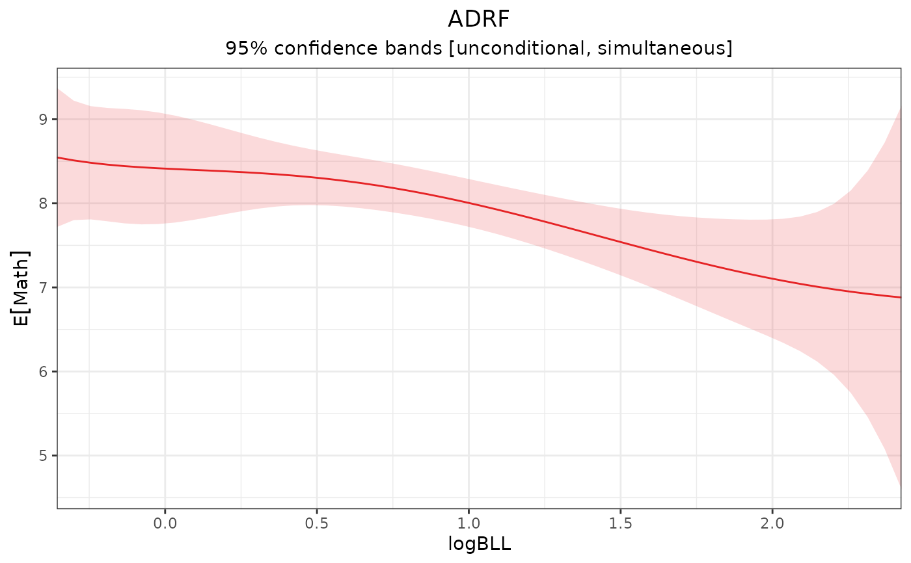

Estimates the average dose-response function (ADRF) for a fitted model object.
Usage
adrf(x, ...)
# Default S3 method
adrf(
x,
treat,
vcov = "unconditional",
cluster = NULL,
type = NULL,
outcome = NULL,
data = NULL,
subset = NULL,
by = NULL,
wts = NULL,
range = 0.95,
n = 51,
fwb.args = list(),
...
)Arguments
- x
- ...
further arguments passed to
marginaleffects::get_predict().- treat
a string specifying the name of the treatment variable.
- vcov
how the covariance matrix of the estimates should be computed. If
"unconditional"(the default for frequentist models), use the sandwich estimator including sampling uncertainty, with the HC2 small-sample adjustment when it is available (see Details). If"boot"or"fwb", use the traditional or fractional weighted bootstrap, respectively (both of which require the fwb package to be installed). Otherwise, may be a covariance matrix or other allowed input to thevcovargument ofmarginaleffects::get_vcov(). Can also be"none"to avoid computing the uncertainty. For Bayesian models, only"posterior", which uses the posterior of the estimates, and"none"are allowed. For models fit to multiply imputed data,"boot"and"fwb"are not allowed.- cluster
an optional data frame or one-sided formula with the clustering terms for cluster-robust inference. When
vcovis"unconditional", the CR2 small-sample adjustment is used when it is available (see Details). Whenvcovis"conditional", the covariance matrix of the model coefficients is computed usingsandwich::vcovCL()with its default type;vcovcan also be"HC0","HC1","HC2", or"HC3"to request that type fromsandwich::vcovCL()("HC2"and"HC3"are available only forlm()andglm()models). Other strings and functions supplied tovcovcannot be used withcluster.- type
character string indicating the type of prediction. Passed to
marginaleffects::get_predict(). When not supplied,"response"is used for predictions on the scale of the outcome variable, unless the model does not allow it (e.g.,MASS::polr()models), in which case the typemarginaleffects::predictions()uses by default for the model is used; for multinomial and ordinal models, both give the probability of each category of the outcome. Other options might include"link"for the linear predictor or, for some ordinal models,"mean"for the expected value of the outcome. This argument is ignored forlmobjects.- outcome
optional; for models that give a separate prediction for each category of the outcome (e.g., multinomial and ordinal models), a character vector naming the categories for which to compute the effect curve. Default is to compute the effect curve for every category. See the section Categorical outcomes in Details of
adrf().- data
an optional data frame containing the observations originally used to fit the outcome model supplied to
x. This is needed when the dataset cannot be recovered from the model (e.g., when the model was fit inside a function or is not supported by insight), and it is used to find variables named insubset,by,wts, andclusterthat are not in the dataset used to fit the model. In most cases, this does not need to be supplied.- subset
an optional logical expression indicating the subset of data to use for estimation. Will be evaluated in the environment of the original dataset supplied to the model fitting function. Can also be a vector of row numbers or row names; logical vectors and row numbers refer to the units used to fit the model (i.e., excluding any dropped because of missing values), and row names refer to the original dataset.
- by
optional variable(s) over which to group the estimation. Can be a character vector or one-sided formula.
- wts
optional weights used to generalize the effect curve to a weighted population. Can be a numeric vector, the name of a variable in the original dataset,
TRUEto use the weights used to fit the model, orFALSEfor no weights. The default depends on the model; see Details.- range
numeric; a numeric vector corresponding either to the lower and upper bounds of the treatment values for which to compute the effect curve or a single number corresponding to the middle quantile of the treatment. Default is .95 to use the .025 and .975 quantiles of the treatment. See Details.
- n
integer specifying the number of equally spaced grid points on which to compute the effect curve anchor points. Must be between 2 and 1000. Default is 51; higher numbers increase computation time and size of the resulting object but improve accuracy.
- fwb.args
an optional list of arguments to be passed to
fwb::fwb()whenvcovis"boot"or"fwb". Whenclis not included and a future plan with more than one worker is set,cl = "future"is used; see the section Parallelization with future in Details.
Value
An object of class <effect_curve>. This object is a function with attributes. See effect_curve for details on this function and its outputs.
Details
adrf() estimates the ADRF by computing average predicted outcomes in the sample for counterfactual treatment values, optionally stratified by grouping variables and accounting for estimation uncertainty via unconditional or conditional variance estimation or bootstrapping. Unconditional variance estimation and bootstrapping treat the sample as random. When vcov = "unconditional", the variance is computed using the formulas in Hansen et al. (2024), which involves augmenting the influence function with a term to account for sampling from the superpopulation. Unconditional variance estimation requires sandwich::estfun() and sandwich::bread() methods for the supplied object to be available. For models fit with mgcv::gam()
or mgcv::bam()
, these are computed from the penalized fit instead, treating the smoothing parameters as fixed, so the variance does not account for their selection, which can make it noticeably smaller than a bootstrap variance that does; models with extended families (e.g., mgcv::nb()) are not supported.
In the unconditional variance, each unit's contribution to the influence function of the model coefficients is divided by \(\sqrt{1 - h_i}\), where \(h_i\) is the unit's leverage (i.e., hat value), as in the HC2 estimator of MacKinnon and White (1985). Without this adjustment, the variance would share the downward bias of the HC0 sandwich estimator, which is largest for estimates that depend on units with high leverage, such as the ADRF at the extremes of the treatment, and which can make the omnibus tests in summary.effect_curve() reject a true null hypothesis too often in small samples. The leverages are computed from the fitted model for lm() and glm() models, taken from the fit for mgcv::gam() models (in which they are the leverages of the penalized fit, which sum to the effective degrees of freedom), and extracted using hatvalues() for other models; when they cannot be found, the HC1 adjustment is used instead with a message, which multiplies the variance contributed by the model coefficients by \(n/(n-p)\), where \(n\) is the number of units and \(p\) the number of estimated parameters (the effective degrees of freedom for mgcv::gam() and mgcv::bam() models), and corrects the bias only for the average leverage. The adjustment is not used with svyglm models, whose variance is computed from the survey design.
When cluster is supplied, the unconditional variance uses the CR2 adjustment described by Pustejovsky and Tipton (2018), the cluster-level analog of HC2: within each cluster, the vector of residuals is multiplied by \((I - H_{gg})^{-1/2}\), where \(H_{gg}\) is the block of the hat matrix for the units in the cluster, in place of the usual \(G/(G-1)\) adjustment, where \(G\) is the number of clusters. With clusters of one unit, it is the HC2 adjustment. CR2 is available only for lm() and glm() models (including those whose influence function is that of an ordinary glm() fit, such as glm_weightit() models with fixed weights); for other models, the CR1 adjustment, \(\frac{G}{G-1}\frac{n-1}{n-p}\) (the default of sandwich::vcovCL()), is used with a message. For generalized linear models, the residuals and hat matrix are those of the final iteratively reweighted least squares fit, so the adjusted variance can differ from that of sandwich::vcovCL(type = "HC2") when the working weights vary within clusters.
When a <mira> object from mice or a <mimira> object from MatchThem is supplied, analyses are applied to each imputed dataset and pooled using Rubin's rules. The degrees of freedom used for tests and confidence intervals are those of Reiter (2007), or of Li, Raghunathan, and Rubin (1991) when the complete-data degrees of freedom are infinite (e.g., for generalized linear models). These account for the number of imputations and the fraction of missing information, which is assumed to be the same for all points on the curve, so a single value is used for every point and for joint inference. Bootstrapping is not allowed with such objects.
Categorical outcomes
For models of categorical outcomes, such as multinomial and ordinal regression models, the predictions are by default the probabilities of each category of the outcome, and adrf() estimates an ADRF for each category, i.e., the average probability of that category at each treatment value. These are stored together in one <effect_curve> object, and at each treatment value, the estimates for all categories sum to 1. The categories are treated much like subgroups defined by by: the output of the effect curve and of the functions that take it contain a column named outcome identifying the category (or .outcome, if a variable named in by is called outcome), and the outcome argument of the effect curve, summary.effect_curve(), plot.effect_curve(), and the other functions that take an effect curve selects categories. curve_contrast() compares subgroups within each category rather than categories with each other. Supplying outcome to adrf() computes the effect curve for only those categories, which saves computation when only some categories are of interest.
To estimate a single curve with such a model, supply a type that gives one prediction per unit, if the model has one (e.g., type = "link" or type = "mean" for WeightIt::ordinal_weightit() models). Further arguments needed by the model's predict() method (e.g., values for type = "mean" with WeightIt::ordinal_weightit() models whose outcome categories are not numbers) can be supplied through ....
range
The range argument controls for which range of the treatment the effect curve is to be evaluated. It can be supplied either as two numbers corresponding to the lower and upper bounds for the treatment (e.g., range = c(0, 10)) or as a single number corresponding to the middle quantile of the treatment (e.g., range = .9, which uses the .05 and .95 quantiles of the treatment as the bounds). The default is .95 to use the .025 and .975 quantiles of the treatment. When supplied as a quantile, the quantiles are evaluated incorporating the weights supplied to wts.
A reason not to use the full treatment range (e.g., by setting range = 1) is that there is likely very little certainty about the effect curve at the treatment extremes. This uncertainty can muddy tests of the effect curve. However, limiting the treatment range means inferences about the effect curve are less generalizable to more extreme values of the treatment. Note that this does not change the data used to fit the effect curve, just the points along the effect curve for which inference and estimation are to take place.
wts
The wts argument supplies weights that define the population over which the predicted outcomes are averaged, such as sampling weights. When supplied as a numeric vector, it must have one value for each unit used to fit the model (or, with multiply imputed data, either one value for each unit in each imputed dataset or one value for each row of the imputed datasets stacked together). When supplied as a string, it is the name of a variable in the original dataset. wts = TRUE uses the weights used to fit the model, as extracted by insight::get_weights(), and wts = FALSE weights all units equally.
When wts is not supplied, the default depends on the model. When a <svyglm> object from survey is supplied, the survey weights are always used, and wts cannot be supplied (other than as TRUE), because the design-based variance treats the estimates as describing the population the survey design represents. When a <glm_weightit> object, etc., from WeightIt is supplied, the sampling weights are used if s.weights were supplied in the original call to weightit(); the balancing weights are not, because they are used to fit the outcome model rather than to define the target population. For other models, all units are weighted equally, even when the model was fit with weights. See vignette("adrftools") for more details on using the wts argument.
Parallelization with future
adrf() can run its slowest computations in parallel using the future framework, which requires the future.apply package to be installed. These are the bootstrap replicates, the predictions at each treatment value for Bayesian models, the numerical derivatives of the estimates with respect to the model coefficients (used in the delta method for models whose predictions are not computed from the model matrix), and the analyses of the imputed datasets for models fit to multiply imputed data. To request parallel processing, specify a future plan before calling adrf(), e.g., using
future::plan("multisession", workers = 4)after which these computations are distributed across the workers in pieces (a treatment value, a model coefficient, or an imputed dataset), each worker starting a new piece as soon as it finishes one. No argument to adrf() is involved, and without a plan, or with a plan of a single worker, they run sequentially. Parallelization helps most with large datasets, slow predictions (e.g., from Bayesian models), and bootstrapping; for small problems, starting the work on the workers can take longer than it saves.
The results are the same whether or not parallel processing is used and do not depend on the number of workers. None of these computations draws random numbers other than the bootstrap, but each runs on its own random number stream generated from the current seed, and the bootstrap weights are drawn by fwb::fwb()
from the current seed before the replicates are computed, so calling set.seed() before adrf() is all that is needed to make the results reproducible. The random number stream after the call is also the same either way; generating the streams moves it on by one draw.
Each worker receives its own copy of the model and the data it needs. future refuses to send more than getOption("future.globals.maxSize") (500 MB by default) to a worker at once; with large models or datasets, raise it, e.g., with options(future.globals.maxSize = 2e9). Packages attached in the current session are attached on the workers, but objects in the global environment that the model formula refers to (e.g., a function defined by the user) are not, so with such a model, a plan whose workers are separate R sessions gives an error. stan4bart::stan4bart() models cannot be copied to another R session, so their predictions are always computed in the current session. On Linux and macOS outside RStudio, future::plan("multicore") instead forks the current session, so the workers share its memory and nothing is copied.
References
Li, K. H., Raghunathan, T. E., & Rubin, D. B. (1991). Large-sample significance levels from multiply imputed data using moment-based statistics and an F reference distribution. Journal of the American Statistical Association, 86(416), 1065–1073. doi:10.1080/01621459.1991.10475152
MacKinnon, J. G., & White, H. (1985). Some heteroskedasticity-consistent covariance matrix estimators with improved finite sample properties. Journal of Econometrics, 29(3), 305–325. doi:10.1016/0304-4076(85)90158-7
Pustejovsky, J. E., & Tipton, E. (2018). Small-sample methods for cluster-robust variance estimation and hypothesis testing in fixed effects models. Journal of Business & Economic Statistics, 36(4), 672–683. doi:10.1080/07350015.2016.1247004
Reiter, J. P. (2007). Small-sample degrees of freedom for multi-component significance tests with multiple imputation for missing data. Biometrika, 94(2), 502–508. doi:10.1093/biomet/asm028
See also
plot.effect_curve()for plotting the ADRFsummary.effect_curve()for testing hypotheses about the ADRFeffect_curvefor computing point estimates along the ADRFcurve_projection()for projecting a simpler model onto the ADRFreference_curve()for computing the difference between each point on the ADRF and a specific reference pointcurve_contrast()for contrasting ADRFs computed within subgroupsamef()for computing the average marginal effect function (AMEF), the derivative of the ADRFshift_curve()for estimating the mean outcome when every unit's treatment is shifted from its observed valuemarginaleffects::avg_predictions()for computing average adjusted predictions for fitted models (similar to the ADRF)
Examples
data("nhanes3lead")
fit <- lm(Math ~ poly(logBLL, 5) *
Male * (Age + Race + PIR +
Enough_Food),
data = nhanes3lead)
# ADRF of logBLL on Math, unconditional
# inference
adrf1 <- adrf(fit, treat = "logBLL")
adrf1
#> An <effect_curve> object
#>
#> - curve type: ADRF
#> - response: Math
#> - treatment: logBLL
#> + range: -0.3567 to 2.4248
#> + grid points: 51
#> - sample size: 2,521
#> - inference: unconditional (HC2)
#>
## Plot the ADRF
plot(adrf1)

## ADRF estimates at given points
adrf1(logBLL = c(0, 1, 2)) |>
summary()
#> ADRF Estimates
#> ──────────────────────────────────────────
#> logBLL Estimate Std. Error CI Low CI High
#> 0 8.413 0.2312 7.861 8.964
#> 1 8.005 0.1005 7.765 8.245
#> 2 7.103 0.2495 6.508 7.699
#> ──────────────────────────────────────────
#> Inference: unconditional, simultaneous
#> Confidence level: 95% (t* = 2.385, df = 2437)
# ADRF of logBLL on Math, unconditional
# inference; manual range
adrf2 <- adrf(fit, treat = "logBLL",
range = c(0, 2))
adrf2
#> An <effect_curve> object
#>
#> - curve type: ADRF
#> - response: Math
#> - treatment: logBLL
#> + range: 0 to 2
#> + grid points: 51
#> - sample size: 2,521
#> - inference: unconditional (HC2)
#>
plot(adrf2)
 # ADRF of logBLL on Math, bootstrap
# inference
adrf_b <- adrf(fit, treat = "logBLL",
vcov = "fwb")
#>
| | 0 % ~calculating
|+ | 1 % ~37s
|+ | 2 % ~29s
|++ | 3 % ~26s
|++ | 4 % ~25s
|+++ | 5 % ~24s
|+++ | 6 % ~23s
|++++ | 7 % ~23s
|++++ | 8 % ~22s
|+++++ | 9 % ~22s
|+++++ | 10% ~21s
|++++++ | 11% ~21s
|++++++ | 12% ~21s
|+++++++ | 13% ~20s
|+++++++ | 14% ~20s
|++++++++ | 15% ~20s
|++++++++ | 16% ~20s
|+++++++++ | 17% ~19s
|+++++++++ | 18% ~19s
|++++++++++ | 19% ~19s
|++++++++++ | 20% ~19s
|+++++++++++ | 21% ~18s
|+++++++++++ | 22% ~19s
|++++++++++++ | 23% ~19s
|++++++++++++ | 24% ~18s
|+++++++++++++ | 25% ~18s
|+++++++++++++ | 26% ~18s
|++++++++++++++ | 27% ~18s
|++++++++++++++ | 28% ~17s
|+++++++++++++++ | 29% ~17s
|+++++++++++++++ | 30% ~17s
|++++++++++++++++ | 31% ~16s
|++++++++++++++++ | 32% ~16s
|+++++++++++++++++ | 33% ~16s
|+++++++++++++++++ | 34% ~16s
|++++++++++++++++++ | 35% ~15s
|++++++++++++++++++ | 36% ~15s
|+++++++++++++++++++ | 37% ~15s
|+++++++++++++++++++ | 38% ~15s
|++++++++++++++++++++ | 39% ~14s
|++++++++++++++++++++ | 40% ~14s
|+++++++++++++++++++++ | 41% ~14s
|+++++++++++++++++++++ | 42% ~14s
|++++++++++++++++++++++ | 43% ~14s
|++++++++++++++++++++++ | 44% ~13s
|+++++++++++++++++++++++ | 45% ~13s
|+++++++++++++++++++++++ | 46% ~13s
|++++++++++++++++++++++++ | 47% ~12s
|++++++++++++++++++++++++ | 48% ~12s
|+++++++++++++++++++++++++ | 49% ~12s
|+++++++++++++++++++++++++ | 50% ~12s
|++++++++++++++++++++++++++ | 51% ~11s
|++++++++++++++++++++++++++ | 52% ~11s
|+++++++++++++++++++++++++++ | 53% ~11s
|+++++++++++++++++++++++++++ | 54% ~11s
|++++++++++++++++++++++++++++ | 55% ~10s
|++++++++++++++++++++++++++++ | 56% ~10s
|+++++++++++++++++++++++++++++ | 57% ~10s
|+++++++++++++++++++++++++++++ | 58% ~10s
|++++++++++++++++++++++++++++++ | 59% ~09s
|++++++++++++++++++++++++++++++ | 60% ~09s
|+++++++++++++++++++++++++++++++ | 61% ~09s
|+++++++++++++++++++++++++++++++ | 62% ~09s
|++++++++++++++++++++++++++++++++ | 63% ~09s
|++++++++++++++++++++++++++++++++ | 64% ~08s
|+++++++++++++++++++++++++++++++++ | 65% ~08s
|+++++++++++++++++++++++++++++++++ | 66% ~08s
|++++++++++++++++++++++++++++++++++ | 67% ~08s
|++++++++++++++++++++++++++++++++++ | 68% ~07s
|+++++++++++++++++++++++++++++++++++ | 69% ~07s
|+++++++++++++++++++++++++++++++++++ | 70% ~07s
|++++++++++++++++++++++++++++++++++++ | 71% ~07s
|++++++++++++++++++++++++++++++++++++ | 72% ~06s
|+++++++++++++++++++++++++++++++++++++ | 73% ~06s
|+++++++++++++++++++++++++++++++++++++ | 74% ~06s
|++++++++++++++++++++++++++++++++++++++ | 75% ~06s
|++++++++++++++++++++++++++++++++++++++ | 76% ~05s
|+++++++++++++++++++++++++++++++++++++++ | 77% ~05s
|+++++++++++++++++++++++++++++++++++++++ | 78% ~05s
|++++++++++++++++++++++++++++++++++++++++ | 79% ~05s
|++++++++++++++++++++++++++++++++++++++++ | 80% ~05s
|+++++++++++++++++++++++++++++++++++++++++ | 81% ~04s
|+++++++++++++++++++++++++++++++++++++++++ | 82% ~04s
|++++++++++++++++++++++++++++++++++++++++++ | 83% ~04s
|++++++++++++++++++++++++++++++++++++++++++ | 84% ~04s
|+++++++++++++++++++++++++++++++++++++++++++ | 85% ~03s
|+++++++++++++++++++++++++++++++++++++++++++ | 86% ~03s
|++++++++++++++++++++++++++++++++++++++++++++ | 87% ~03s
|++++++++++++++++++++++++++++++++++++++++++++ | 88% ~03s
|+++++++++++++++++++++++++++++++++++++++++++++ | 89% ~03s
|+++++++++++++++++++++++++++++++++++++++++++++ | 90% ~02s
|++++++++++++++++++++++++++++++++++++++++++++++ | 91% ~02s
|++++++++++++++++++++++++++++++++++++++++++++++ | 92% ~02s
|+++++++++++++++++++++++++++++++++++++++++++++++ | 93% ~02s
|+++++++++++++++++++++++++++++++++++++++++++++++ | 94% ~01s
|++++++++++++++++++++++++++++++++++++++++++++++++ | 95% ~01s
|++++++++++++++++++++++++++++++++++++++++++++++++ | 96% ~01s
|+++++++++++++++++++++++++++++++++++++++++++++++++ | 97% ~01s
|+++++++++++++++++++++++++++++++++++++++++++++++++ | 98% ~00s
|++++++++++++++++++++++++++++++++++++++++++++++++++| 99% ~00s
|++++++++++++++++++++++++++++++++++++++++++++++++++| 100% elapsed=23s
adrf_b
#> An <effect_curve> object
#>
#> - curve type: ADRF
#> - response: Math
#> - treatment: logBLL
#> + range: -0.3567 to 2.4248
#> + grid points: 51
#> - sample size: 2,521
#> - inference: bootstrap (fractional weighted, 999 replicates)
#>
plot(adrf_b)
# ADRF of logBLL on Math, bootstrap
# inference
adrf_b <- adrf(fit, treat = "logBLL",
vcov = "fwb")
#>
| | 0 % ~calculating
|+ | 1 % ~37s
|+ | 2 % ~29s
|++ | 3 % ~26s
|++ | 4 % ~25s
|+++ | 5 % ~24s
|+++ | 6 % ~23s
|++++ | 7 % ~23s
|++++ | 8 % ~22s
|+++++ | 9 % ~22s
|+++++ | 10% ~21s
|++++++ | 11% ~21s
|++++++ | 12% ~21s
|+++++++ | 13% ~20s
|+++++++ | 14% ~20s
|++++++++ | 15% ~20s
|++++++++ | 16% ~20s
|+++++++++ | 17% ~19s
|+++++++++ | 18% ~19s
|++++++++++ | 19% ~19s
|++++++++++ | 20% ~19s
|+++++++++++ | 21% ~18s
|+++++++++++ | 22% ~19s
|++++++++++++ | 23% ~19s
|++++++++++++ | 24% ~18s
|+++++++++++++ | 25% ~18s
|+++++++++++++ | 26% ~18s
|++++++++++++++ | 27% ~18s
|++++++++++++++ | 28% ~17s
|+++++++++++++++ | 29% ~17s
|+++++++++++++++ | 30% ~17s
|++++++++++++++++ | 31% ~16s
|++++++++++++++++ | 32% ~16s
|+++++++++++++++++ | 33% ~16s
|+++++++++++++++++ | 34% ~16s
|++++++++++++++++++ | 35% ~15s
|++++++++++++++++++ | 36% ~15s
|+++++++++++++++++++ | 37% ~15s
|+++++++++++++++++++ | 38% ~15s
|++++++++++++++++++++ | 39% ~14s
|++++++++++++++++++++ | 40% ~14s
|+++++++++++++++++++++ | 41% ~14s
|+++++++++++++++++++++ | 42% ~14s
|++++++++++++++++++++++ | 43% ~14s
|++++++++++++++++++++++ | 44% ~13s
|+++++++++++++++++++++++ | 45% ~13s
|+++++++++++++++++++++++ | 46% ~13s
|++++++++++++++++++++++++ | 47% ~12s
|++++++++++++++++++++++++ | 48% ~12s
|+++++++++++++++++++++++++ | 49% ~12s
|+++++++++++++++++++++++++ | 50% ~12s
|++++++++++++++++++++++++++ | 51% ~11s
|++++++++++++++++++++++++++ | 52% ~11s
|+++++++++++++++++++++++++++ | 53% ~11s
|+++++++++++++++++++++++++++ | 54% ~11s
|++++++++++++++++++++++++++++ | 55% ~10s
|++++++++++++++++++++++++++++ | 56% ~10s
|+++++++++++++++++++++++++++++ | 57% ~10s
|+++++++++++++++++++++++++++++ | 58% ~10s
|++++++++++++++++++++++++++++++ | 59% ~09s
|++++++++++++++++++++++++++++++ | 60% ~09s
|+++++++++++++++++++++++++++++++ | 61% ~09s
|+++++++++++++++++++++++++++++++ | 62% ~09s
|++++++++++++++++++++++++++++++++ | 63% ~09s
|++++++++++++++++++++++++++++++++ | 64% ~08s
|+++++++++++++++++++++++++++++++++ | 65% ~08s
|+++++++++++++++++++++++++++++++++ | 66% ~08s
|++++++++++++++++++++++++++++++++++ | 67% ~08s
|++++++++++++++++++++++++++++++++++ | 68% ~07s
|+++++++++++++++++++++++++++++++++++ | 69% ~07s
|+++++++++++++++++++++++++++++++++++ | 70% ~07s
|++++++++++++++++++++++++++++++++++++ | 71% ~07s
|++++++++++++++++++++++++++++++++++++ | 72% ~06s
|+++++++++++++++++++++++++++++++++++++ | 73% ~06s
|+++++++++++++++++++++++++++++++++++++ | 74% ~06s
|++++++++++++++++++++++++++++++++++++++ | 75% ~06s
|++++++++++++++++++++++++++++++++++++++ | 76% ~05s
|+++++++++++++++++++++++++++++++++++++++ | 77% ~05s
|+++++++++++++++++++++++++++++++++++++++ | 78% ~05s
|++++++++++++++++++++++++++++++++++++++++ | 79% ~05s
|++++++++++++++++++++++++++++++++++++++++ | 80% ~05s
|+++++++++++++++++++++++++++++++++++++++++ | 81% ~04s
|+++++++++++++++++++++++++++++++++++++++++ | 82% ~04s
|++++++++++++++++++++++++++++++++++++++++++ | 83% ~04s
|++++++++++++++++++++++++++++++++++++++++++ | 84% ~04s
|+++++++++++++++++++++++++++++++++++++++++++ | 85% ~03s
|+++++++++++++++++++++++++++++++++++++++++++ | 86% ~03s
|++++++++++++++++++++++++++++++++++++++++++++ | 87% ~03s
|++++++++++++++++++++++++++++++++++++++++++++ | 88% ~03s
|+++++++++++++++++++++++++++++++++++++++++++++ | 89% ~03s
|+++++++++++++++++++++++++++++++++++++++++++++ | 90% ~02s
|++++++++++++++++++++++++++++++++++++++++++++++ | 91% ~02s
|++++++++++++++++++++++++++++++++++++++++++++++ | 92% ~02s
|+++++++++++++++++++++++++++++++++++++++++++++++ | 93% ~02s
|+++++++++++++++++++++++++++++++++++++++++++++++ | 94% ~01s
|++++++++++++++++++++++++++++++++++++++++++++++++ | 95% ~01s
|++++++++++++++++++++++++++++++++++++++++++++++++ | 96% ~01s
|+++++++++++++++++++++++++++++++++++++++++++++++++ | 97% ~01s
|+++++++++++++++++++++++++++++++++++++++++++++++++ | 98% ~00s
|++++++++++++++++++++++++++++++++++++++++++++++++++| 99% ~00s
|++++++++++++++++++++++++++++++++++++++++++++++++++| 100% elapsed=23s
adrf_b
#> An <effect_curve> object
#>
#> - curve type: ADRF
#> - response: Math
#> - treatment: logBLL
#> + range: -0.3567 to 2.4248
#> + grid points: 51
#> - sample size: 2,521
#> - inference: bootstrap (fractional weighted, 999 replicates)
#>
plot(adrf_b)
 # ADRF in subset
adrf_m <- adrf(fit, treat = "logBLL",
subset = Male == 1)
adrf_m
#> An <effect_curve> object
#>
#> - curve type: ADRF
#> - response: Math
#> - treatment: logBLL
#> + range: -0.3567 to 2.4248
#> + grid points: 51
#> - sample size: 1,282
#> - inference: unconditional (HC2)
#>
# ADRFs in subgroups
adrf_by <- adrf(fit, treat = "logBLL",
by = ~Male)
adrf_by
#> An <effect_curve> object
#>
#> - curve type: ADRF
#> - response: Math
#> - treatment: logBLL
#> + range: -0.3567 to 2.4248
#> + grid points: 51
#> - by: Male (2 subgroups)
#> - sample size: 2,521
#> - inference: unconditional (HC2)
#>
# ADRF in subset
adrf_m <- adrf(fit, treat = "logBLL",
subset = Male == 1)
adrf_m
#> An <effect_curve> object
#>
#> - curve type: ADRF
#> - response: Math
#> - treatment: logBLL
#> + range: -0.3567 to 2.4248
#> + grid points: 51
#> - sample size: 1,282
#> - inference: unconditional (HC2)
#>
# ADRFs in subgroups
adrf_by <- adrf(fit, treat = "logBLL",
by = ~Male)
adrf_by
#> An <effect_curve> object
#>
#> - curve type: ADRF
#> - response: Math
#> - treatment: logBLL
#> + range: -0.3567 to 2.4248
#> + grid points: 51
#> - by: Male (2 subgroups)
#> - sample size: 2,521
#> - inference: unconditional (HC2)
#>